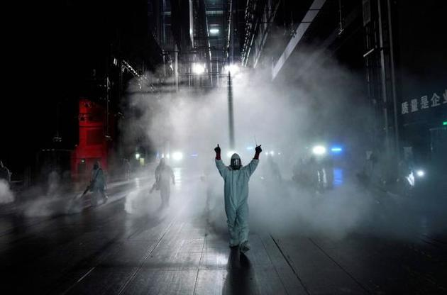

'Нулевой пациент', с которого начался коронавирус, работал в лаборатории в Ухане — Fox News
Нулевой пациент', с которого начался коронавирус, работал в лаборатории в Ухане — Fox News' src='https://zn.ua/img/article/4078/4_main-v1591013216.jpg'>

Posted On: 2020-04-16T11:30:00
Content Date: 2020-04-16
Download Date: 2021-05-13
Document ID: L0C04C2S9